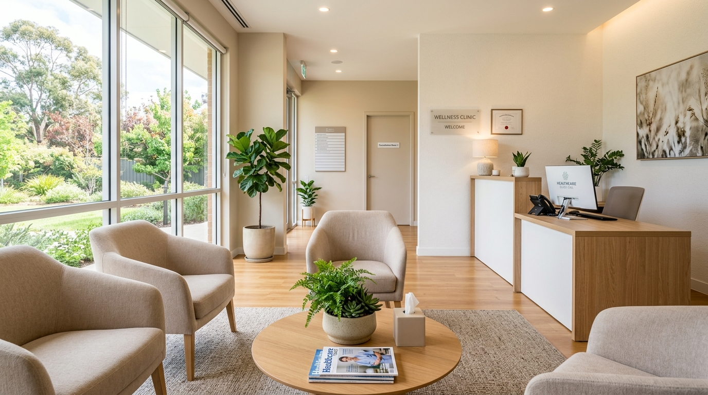

About Prime Care Clinic
Committed to thoughtful, patient-centered healthcare in Rawalpindi.

Patient-Centered Care
Prime Care Clinic & Diabetes Center was established to provide accessible, quality healthcare to the community of Lalazar, Rawalpindi Cantt. Our approach centers on careful medical assessment, clear communication with patients, and evidence-based treatment plans.
We believe effective healthcare comes from listening carefully to patients, taking the time to understand their concerns, and providing honest, well-informed guidance about their health.
Our Core Focus Areas
We concentrate on two primary areas of medical care to provide the depth and quality of service our patients deserve.
General Physician Consultations
Comprehensive health assessments for common medical conditions, chronic disease management, preventive care guidance, and initial evaluation of new symptoms. Our general consultations serve as the foundation of your healthcare journey.
Learn more →Diabetes Care & Management
Specialized attention for patients with Type 1 and Type 2 diabetes. We provide monitoring guidance, medication management, dietary counseling, and regular follow-up to help patients manage their condition and maintain quality of life.
Learn more →Dr. Muhammad Farhan Khan
Consulting Physician & DiabetologistPrime Care Clinic & Diabetes Center — Rawalpindi Cantt
Meet Dr. Muhammad Farhan Khan
Dr. Muhammad Farhan Khan is the primary consulting physician at Prime Care Clinic & Diabetes Center. With extensive clinical experience managing both acute illnesses and chronic health conditions, he provides thoughtful, compassionate medical care to individuals and families throughout Rawalpindi Cantt.
His clinical approach emphasizes patient education, enabling individuals living with diabetes, hypertension, and metabolic concerns to understand their biomarkers and take active, informed control of their long-term health.
What Guides Our Practice
Accuracy
We prioritize accurate diagnosis and evidence-based treatment. We do not overstate, overpromise, or recommend unnecessary procedures.
Respect
Every patient is treated with dignity and respect. We take the time to listen, explain, and involve patients in their care decisions.
Transparency
We are open about diagnoses, treatment options, costs, and expected outcomes. No hidden agendas, no unnecessary tests.
Have Questions?
We are happy to answer your questions about our clinic and the services we provide.